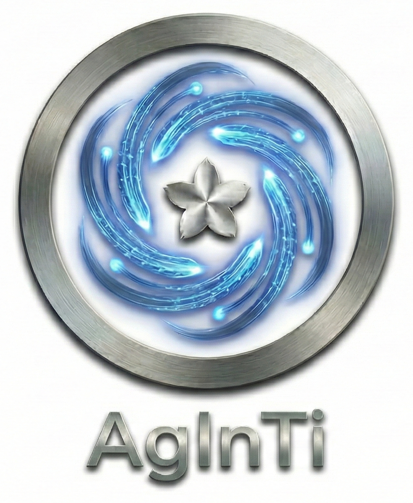

LRE Deep Research
- Profile, books, investments, ideas
- Single-copy notes update flow
- Email output with stage aggregation

A practical prompt-tool system for deep research, self-healing automation, and
continuous cross-repo updates. This page is fully self-contained under
website/ for stable GitHub Pages deployment.
AgInTi connects research, execution, and maintenance using dedicated prompt tools.
Deterministic stage chain with fallback behavior and latest-artifact promotion.
Human-like action loop for online course completion and workflow maintenance.